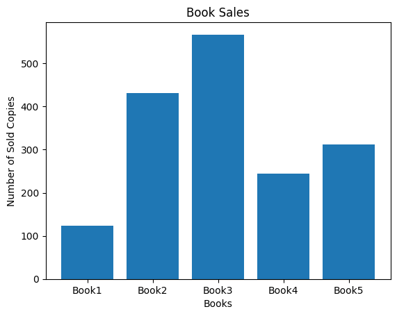
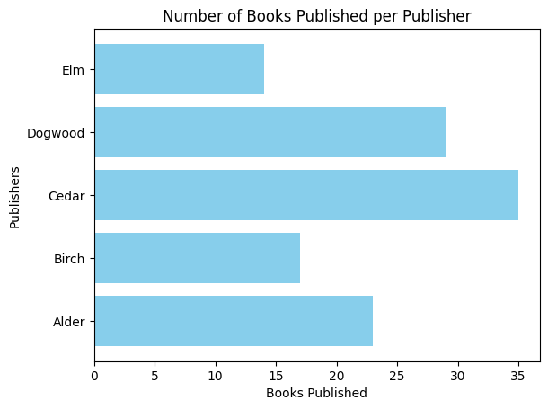
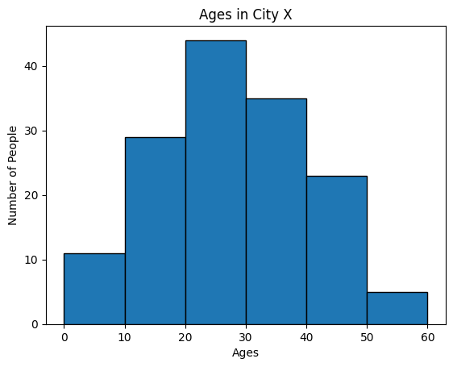
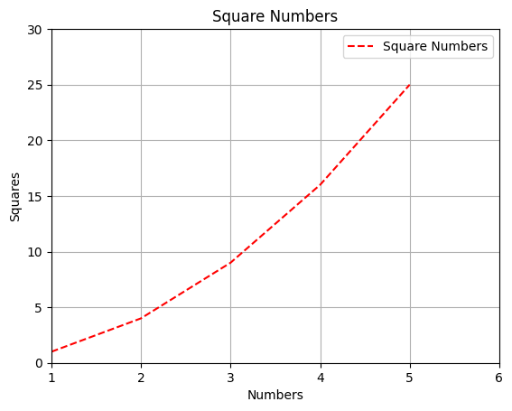
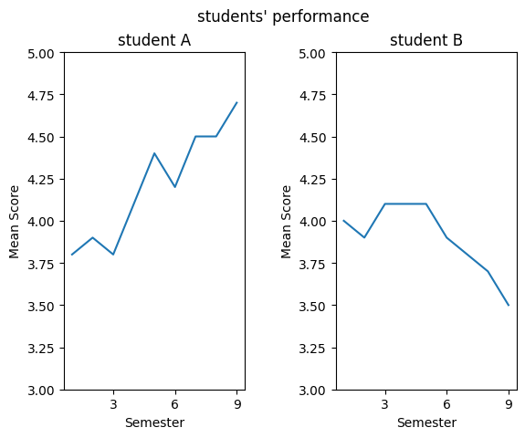
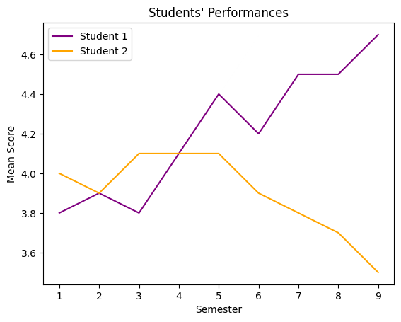

Chapter 8- Data Visualization#
Line Chart#
import matplotlib.pyplot as plt
# A beginner gardener's weekly record of new plant sprouts
week_days = ['Mon', 'Tue', 'Wed', 'Thu', 'Fri', 'Sat', 'Sun']
sprouts_count = [3, 4, 9, 13, 18, 22, 29]
# Plotting the number of new sprouts each day of the week
plt.plot(week_days, sprouts_count)
plt.title('Number of New Plant Sprouts Over a Week')
plt.xlabel('Day of the Week')
plt.ylabel('Sprouts Count')
plt.show()

Pie Chart#
import matplotlib.pyplot as plt
import pandas as pd
# Dataframe for plotting
df = pd.DataFrame({'Fruits': ['Apples', 'Bananas', 'Cherries', 'Dates'],
'Counts': [15, 30, 45, 10]})
labels = df['Fruits']
sizes = df['Counts']
explode = (0.1, 0, 0, 0) # "explode" the first slice
colors = ['lightgreen', 'yellow', 'pink', 'skyblue'] # array of custom colors
plt.pie(sizes, labels=labels, explode=explode, colors=colors, autopct='%1.1f%%', startangle=20)
plt.title('Fruits Preferences')
plt.axis('equal') # Ensures the pie chart is a perfect circle
plt.show()

Bar Charts and Histograms#
They both might look the same but bar plots excel when displaying categorical data, whereas histograms provide insights into numerical data distributions.
import matplotlib.pyplot as plt
books = ['Book1', 'Book2', 'Book3', 'Book4', 'Book5'] # Book names
sales = [123, 432, 567, 245, 312] # Corresponding number of copies sold
plt.bar(books, sales) # Create bar plot
plt.title('Book Sales')
plt.xlabel('Books')
plt.ylabel('Number of Sold Copies')
plt.show()

# horizontal bar chart, dont forget to swap x and y axis and their corresponding labels
publishers = ['Alder', 'Birch', 'Cedar', 'Dogwood', 'Elm']
books_published = [23, 17, 35, 29, 14]
plt.barh(publishers, books_published, color='skyblue') # Replace the bar with barh
plt.title('Number of Books Published per Publisher')
plt.ylabel('Publishers')
plt.xlabel('Books Published')
plt.show()

import matplotlib.pyplot as plt # Importing Matplotlib library
import numpy as np
# Generates a data set with 150 data points, with a mean of 27 and standard deviation of 12
ages = np.random.normal(loc=27, scale=12, size=150)
#Creates 6 bins that are left inclusive, right exclusive
#Bin 1: [0,10), Bin 2: [10,20), and so on
bins = [0, 10, 20, 30, 40, 50, 60]
plt.hist(ages, bins, edgecolor='black') # Create histogram
plt.title('Ages in City X')
plt.xlabel('Ages')
plt.ylabel('Number of People')
plt.show()

Plot Styling#
# basic plot
import matplotlib.pyplot as plt
x = [1, 2, 3, 4, 5]
y = [1, 4, 9, 16, 25]
plt.plot(x, y)
plt.show()

Adjusting Colors, Line Types and Markers#
plt.plot(x, y, color='red', linestyle='dashed', marker='o')
plt.show()

Setting Axes Limits, Ticks, Legend and Gridlines#
plt.plot(x, y, color='red', linestyle='dashed')
plt.title('Square Numbers')
plt.xlabel('Numbers')
plt.ylabel('Squares')
plt.legend(['Square Numbers'])
plt.xlim(1, 6)
plt.ylim(1, 30)
plt.xticks(range(1, 7))
plt.yticks(range(0, 31, 5))
plt.grid(True) # Adding gridlines
plt.show()

Subplots and Axes#
Using Subplots#
Subplots work similarly, helping us position multiple charts within a plot grid.
import numpy as np
import matplotlib.pyplot as plt
first_student_marks = np.array([3.8, 3.9, 3.8, 4.1, 4.4, 4.2, 4.5, 4.5, 4.7])
second_student_marks = np.array([4, 3.9, 4.1, 4.1, 4.1, 3.9, 3.8, 3.7, 3.5])
semesters = np.array([1, 2, 3, 4, 5, 6, 7, 8, 9])
fig = plt.figure() # Start a new figure
# Begin a subplot grid: 1 row and 2 columns.
plt.subplot(1, 2, 1)
plt.ylim([3, 5])
plt.xticks([0, 3, 6, 9])
plt.xlabel('Semester')
plt.ylabel('Mean Score')
plt.plot(semesters, first_student_marks)
plt.title('student A')
plt.subplot(1, 2, 2)
plt.ylim([3, 5])
plt.xticks([0, 3, 6, 9])
plt.xlabel('Semester')
plt.ylabel('Mean Score')
plt.plot(semesters, second_student_marks)
plt.title('student B')
plt.subplots_adjust(wspace=0.5) # Adjusting horizontal space
fig.suptitle('students\' performance') # Adding main title to the whole figure
plt.show()

Plots on the Same Axis#
plt.plot(semesters, first_student_marks, label='Student 1', color='purple') # Overlay Version A.
plt.plot(semesters, second_student_marks, label='Student 2', color='orange') # Overlay Version B.
plt.title('Students\' Performances') # Adding title to our plot
plt.xlabel('Semester')
plt.ylabel('Mean Score')
plt.legend() # Clarify which line refers to each version.
plt.show()

Visualizing Correlation Using Seaborn#
import seaborn as sns
import matplotlib.pyplot as plt
import pandas as pd
# Create a dataset
df = pd.DataFrame({
"hours": [1, 8, 2, 6, 6, 4, 4, 9, 8, 10],
"scores": [30, 70, 35, 90, 95, 70, 50, 100, 85, 97]
})
# Customize scatter plot
sns.scatterplot(x='hours', y='scores', data=df)
plt.title('Study Hours vs. Test Scores')
plt.xlabel('Hours Studied')
plt.ylabel('Test Scores')
plt.show()